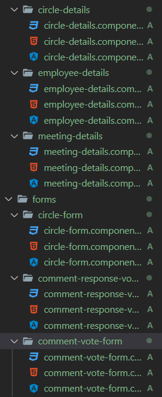

Digit est une société du groupe SF2I spécialisée en développement informatique et édition de logiciels. Nous sommes constamment à la recherche de nouveaux talents.
Digit est une société du groupe SF2I spécialisée en développement informatique et édition de logiciels. Nous sommes constamment à la recherche de nouveaux talents.
L'application Capteur est une application web développé en Angular, anciennement en Java (JEE). Elle permet de réunir plusieurs services sous forme de cercle/carte.


L'architecture MVC se compose de trois modules ou objets principaux à utiliser dans le développement de logiciels :
Un modèle représentant la structure logique sous-jacente des données dans une application logicielle,
ainsi que la classe supérieure qui y est associée.
Ce modèle d'objet ne contient aucune information sur l'interface utilisateur.
* Une vue, autrement dit un ensemble de classes représentant les éléments de l'interface utilisateur
(tous ceux que l'utilisateur voit à l'écran et avec lesquels il peut interagir : boutons,
boîtes de dialogue, etc.).
* Un contrôleur représentant les classes qui se connectent au modèle et à la vue,
et servant à la communication entre les classes dans le modèle et la vue.
Au sein de mon projet, le modèle était des classes en TypeScript

Au sein de mon projet, le modèle était des classes en TypeScript
